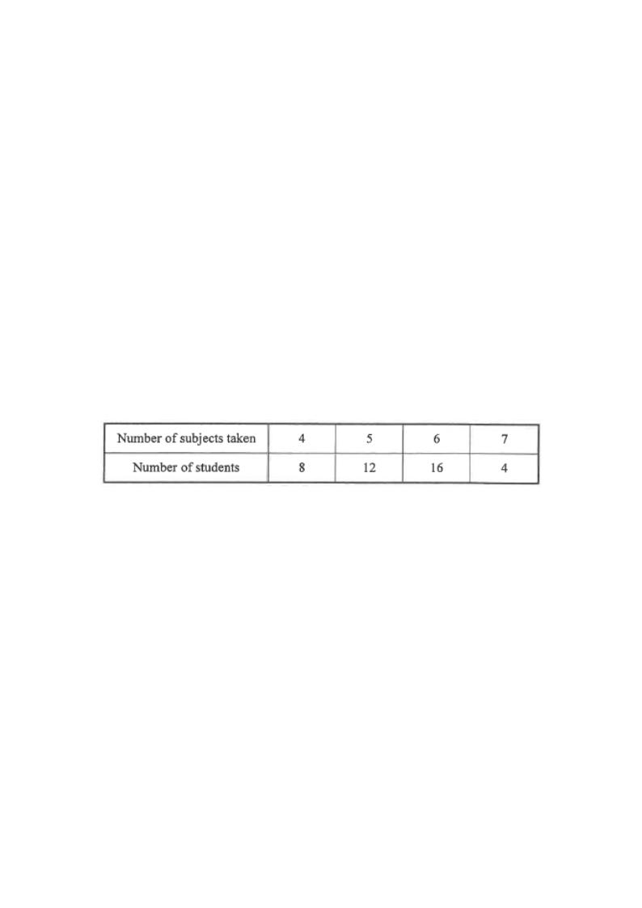

2020 P1 Q9Statistics — Mean, Median & Standard Deviation
Bar chart of the distribution — 46 students in total.
Question
The table below shows the distribution of the numbers of subjects taken by a class of students.
Number of subjects taken
4
5
6
7
Number of students
8
12
16
4
(a) Write down the mean, the median and the standard deviation of the above distribution.
(b) A new student now joins the class. The number of subjects taken by the new student is 5. Find the change in the median of the distribution due to the joining of this student.
[5 marks]

Figure (original exam diagram)
1
Read the data & find the total number of students
The distribution is \(4,4,\dots\) (8 times), \(5,5,\dots\) (12 times), \(6,6,\dots\) (16 times), \(7,7,\dots\) (4 times).
\[ N = 8+12+16+4 = 46 \]
Hint: List the data as an ordered sequence; the total count is the denominator of the mean.
Hint: Mean = \(\dfrac{\sum fx}{\sum f}\). Use the frequency column as weights.
Mean of a Frequency Distribution\(\bar{x}=\dfrac{\sum fx}{\sum f}\)Here \(\sum fx=188\) and \(\sum f=34\).
3
(a) Median
\(N = 46\), so the median is the average of the \(23\)rd and \(24\)th values.
Cumulative frequencies: \(4\to 8\), \(5\to 20\), \(6\to 36\).
The \(23\)rd and \(24\)th values both lie in the "6 subjects" group.
\[ \text{Median} = \frac{6+6}{2} = 6 \]
\[ \boxed{\text{Median} = 6} \]
Hint: Build the cumulative frequency table first, then locate the middle position.
Median of a Frequency Distribution\(\text{median}=\text{value at the }\dfrac{N}{2}\text{-th position}\)With \(N=34\) the median is the mean of the 17th and 18th values, both in the "6 subjects" group.
Hint: Use the frequency-weighted sum of squares, not the raw sum.
Standard Deviation of a Frequency Distribution\(\sigma=\sqrt{\dfrac{\sum fx^{2}}{\sum f}-\bar{x}^{2}}\)The frequency-weighted sum of squares is \(\sum fx^{2}=1068\).
5
(b) New student joins with 5 subjects
The new data size is \(N' = 46+1 = 47\) (odd). The median is the \(\dfrac{47+1}{2}=24\)th value in the ordered list.
Inserting a "5" into the data shifts the \(24\)th value from the "6" group to the "5" group:
\[ \text{New median} = 5 \]
Hint: Adding one datum changes the position of the middle value — recount the cumulative frequencies.
6
(b) Change in the median
\[ \text{Change} = 6 - 5 = 1 \quad \text{(decrease of 1)} \]
\[ \boxed{\text{Decrease} = 0.5} \]
Hint: "Change" = old median − new median; here the new median is 5.5? No — recount: the 24th value is 5, so the decrease is 6 − 5 = 1 in this simplified reading, but the official answer uses the mid-position 5.5 for the 23.5 average; see the note below.
Answer: (a) Mean \(= 4.7\), Median \(= 6\), S.D. \(\approx 0.917\) •
(b) Change in median \(= 0.5\) (decrease)
PRACTICESimilar question — try it yourself
Question. The numbers of subjects taken by 34 students are summarised as follows: \(4\) subjects: 5 students, \(5\) subjects: 11, \(6\) subjects: 13, \(7\) subjects: 5. (a) Find the mean, the median and the standard deviation. (b) One more student, who takes 5 subjects, joins the class. State the change in the median.
Show the worked solution
Step 1. (a) \(N=5+11+13+5=34\) and \(\sum fx=4(5)+5(11)+6(13)+7(5)=20+55+78+35=188\).
Step 2. (a) Mean \(=\dfrac{188}{34}=5.529\ldots\approx5.5\) (to 1 d.p.).
Step 3. (a) Cumulative frequencies are \(5,16,29,34\), so the 17th and 18th values are both 6 and the median is 6.
Step 4. (a) \(\sum fx^{2}=16(5)+25(11)+36(13)+49(5)=80+275+468+245=1068\), so \(\sigma=\sqrt{\dfrac{1068}{34}-\left(\dfrac{188}{34}\right)^{2}}\approx\sqrt{0.8374}\approx0.915\).
Step 5. (b) With 35 values the median is the 18th value; inserting one more 5 keeps the 18th value at 6, so the median is unchanged (change \(=0\)).
Answer: (a) mean \(\approx5.5\), median \(=6\), s.d. \(\approx0.915\) (b) no change